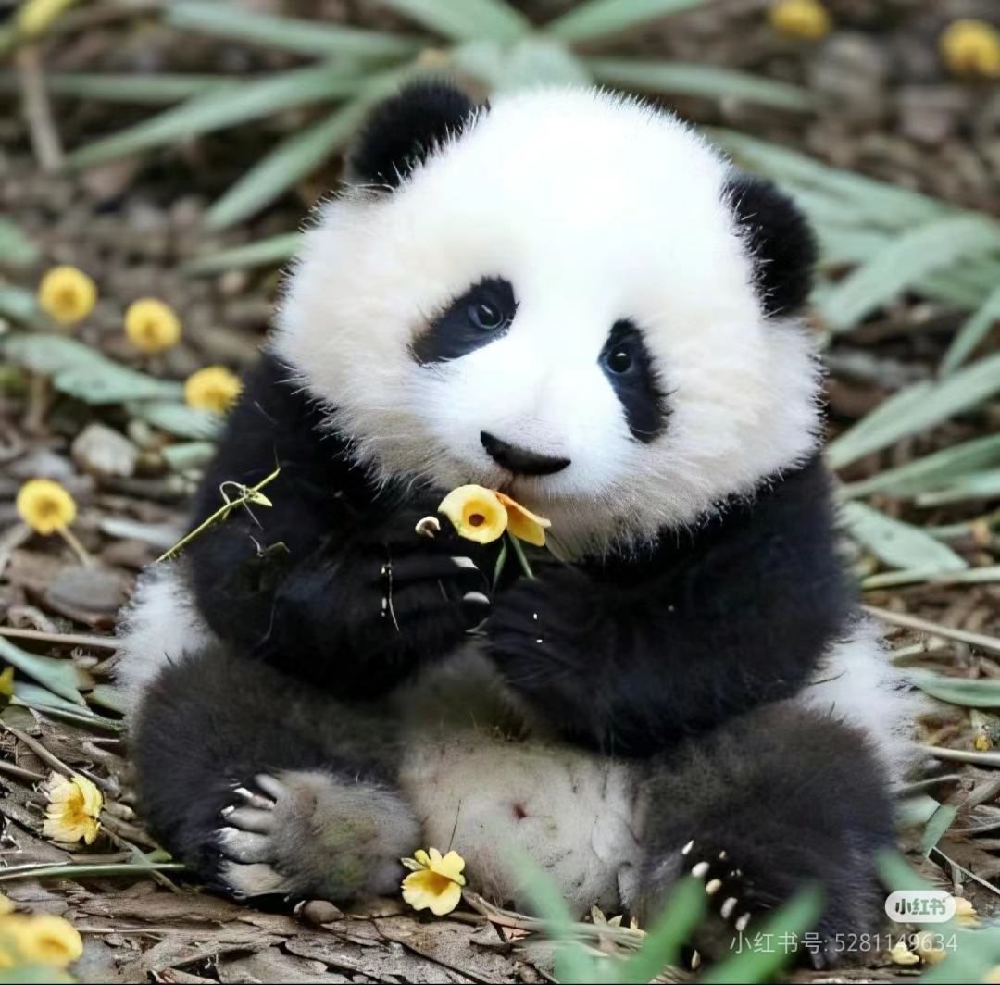
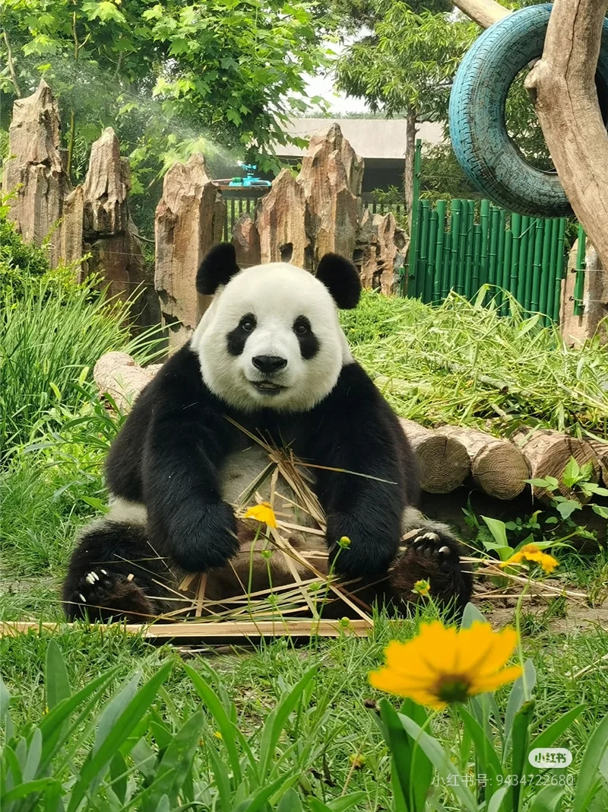
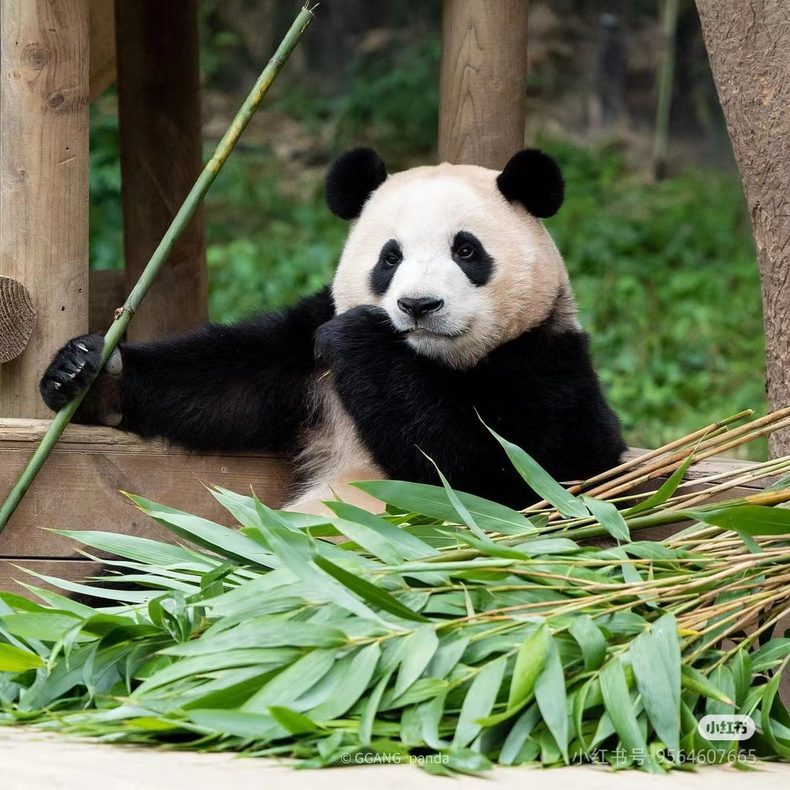
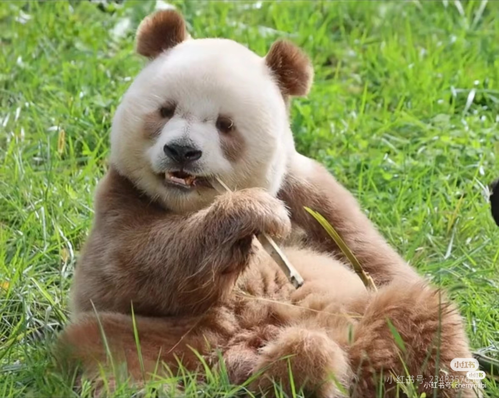

Characteristic of Behaviour
Pandas spend half of their daily feeding time, and most of the rest of the general time is spent in sleep. Lying on their back, on their side, on their stomach, stretched out or curled up in a ball are all their preferred sleeping styles.

Food
The primary food of Panda is Bamboo,Bamboo makes up 99% of a giant panda's diet,

Natural Range
Pandas are native to China, specifically the misty, mountainous regions in Sichuan, Shaanxi, and Gansu provinces.

Species and Classification
There's one widely recognized subspecies, the Qinling Panda, which has a brown-and-white coat instead of black-and-white.